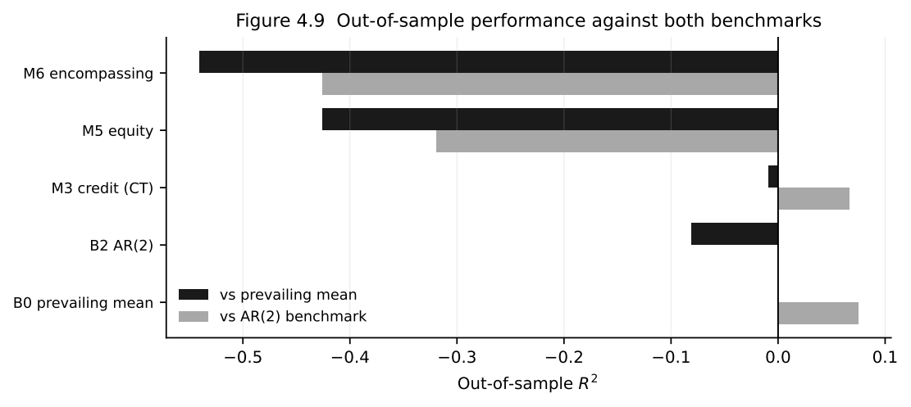
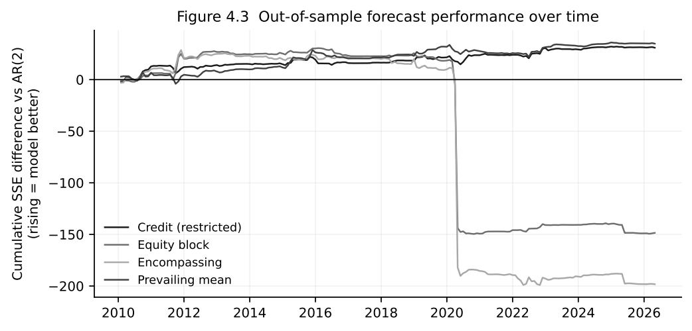
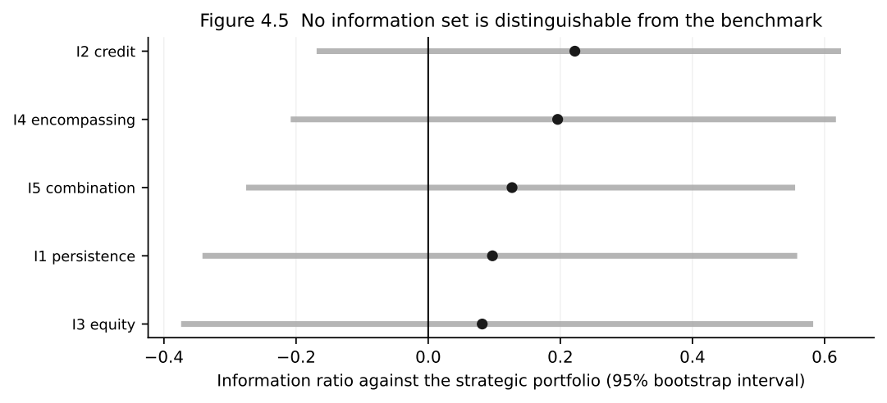

The equity signals failed their first real test.
They did not forecast the relative performance of high-yield and investment-grade corporate bonds better than simple alternatives. Once credit-market information and realistic benchmarks were taken into account, the apparent advantage largely disappeared.
The portfolio results were less straightforward. Some tactical strategies still produced respectable historical performance, and one of the combined models looked reasonably competitive on a risk-adjusted basis. Had I started with the backtest and stopped there, the conclusion would have been much more flattering.
That gap between a plausible signal, a weak forecast and a decent-looking portfolio became one of the more useful results of the thesis.
A signal should beat what you already know
Investment backtests often begin at the end. A model generates positions, those positions generate returns and a Sharpe or information ratio becomes the verdict on whether the idea worked.
I approached the problem in the opposite order. Before asking whether a strategy made money historically, I wanted to know whether the information behind it improved the forecast.
The target was the monthly relative performance of high yield over investment grade. Each model therefore had to compete with information an investor could already have used. One benchmark assumed that future relative returns would resemble their recursively estimated historical average. Another allowed recent relative performance to contain some information about what came next.
The equity-derived signals did worse than both.

The credit variables held up better, although the conclusion depended on the comparison. One credit specification improved on the recent-performance benchmark while still failing to beat the historical mean. A model does not become useful simply because it can beat one convenient alternative.
That distinction matters in noisy return data. Change the benchmark and the same forecasting model can appear either encouraging or redundant. The stronger credit result was visible relative to the autoregressive model, but not relative to the prevailing mean.
Then came 2020
Average forecast statistics also hide when a model works and when it fails.
Several specifications had looked reasonably competitive through parts of the 2010s. The pandemic changed that record sharply. Large forecast errors around the 2020 shock materially worsened the cumulative performance of the equity and combined models.

For a credit-allocation signal, this is not a minor detail. Stress periods are not awkward observations to be cleaned out of the sample. They are often precisely when an investor wants the signal to be useful.
I tested that sensitivity separately. Once the global financial crisis and the early pandemic period were removed, the equity forecast looked considerably less poor. It still did not produce positive out-of-sample evidence against the recent-performance benchmark. The exercise mainly showed that the relationship was highly sensitive to episodes of genuine market stress.
A signal that works through ordinary markets but changes character when conditions become extreme may still describe the past reasonably well. It is harder to rely on for timing risk.
The portfolio told a more flattering story
Poor forecasting results did not translate mechanically into poor portfolio statistics.
The forecasts were converted into modest tilts around a strategic high-yield and investment-grade allocation. On a point-estimate basis, the credit strategy produced the strongest result. A strategy combining credit and equity information also looked competitive, and even the equity strategy recorded a positive information ratio despite the weakness of its forecasts.

Viewed only as a backtest, that is an attractive story. Accounting for uncertainty changes the interpretation.
There was also a model-selection problem. Once several economically plausible signals and specifications have been explored, some will inevitably look better historically than others. I used bootstrap inference and Hansen’s Superior Predictive Ability test to ask whether the stronger-looking strategies survived the wider model search. They did not provide convincing evidence of a persistent benchmark-relative advantage.
This does not make the portfolio exercise meaningless. A noisy forecast can still be directionally right during a handful of influential periods. Position limits and active-risk controls can also contain the damage from bad forecasts while retaining some benefit from better ones. A constrained portfolio can therefore look more respectable than the underlying forecasting evidence.
The practical question is whether there is a credible source of information beneath that performance. For the equity signals I tested, the answer became less convincing as the benchmarks and statistical tests became more demanding.
What held up better
The credit information set was more durable than the equity block. That has a straightforward economic interpretation: if the decision is how much credit risk to carry, information coming directly from corporate-bond spreads is closer to the allocation problem than an aggregate measure of equity-market volatility.
One robustness check made the distinction clearer. High-yield and investment-grade bonds differ not only in credit quality but also in sensitivity to government-bond yields. Their relative return is therefore not a pure measure of credit risk. A strategy that appears to time credit may partly be responding to differences in duration.
When I reduced that duration mismatch, the credit signal became stronger. The equity result did not. A separate adjustment for the smoothing present in corporate-bond index returns moved the credit result in the other direction: its apparent forecasting advantage weakened, while the conclusion on the equity variables remained broadly unchanged.
The credit evidence was therefore promising rather than conclusive. It depended on the benchmark and on how the relative return was constructed. But it survived more of the analysis than the equity block did.
A negative result, but a narrow one
It would be easy to summarise the thesis as evidence that equity signals do not work for credit. The results do not support a claim that broad.
The study tested three aggregate equity-implied measures—VIX, SKEW and the variance risk premium—for an allocation between broad US high-yield and investment-grade indices at a monthly horizon. That setting places clear boundaries around the conclusion.
If information travels from equities to credit over days rather than months, a month-end model may arrive too late. If the relationship is strongest at the level of individual companies or sectors, broad indices can dilute it. And if equity options and credit spreads react to the same deterioration in underlying risk, the equity signal can be economically informative without adding anything once the credit market is already observed.
There is also no reason to assume that the relationship must be linear. Equity-derived information may matter only in particular regimes, beyond certain thresholds or when paired with information about the borrower’s balance sheet.
The negative result narrows the hypothesis. It does not dispose of it.
What I would test next
I would not respond by adding more variables to the same monthly index regression.
A better next test would move closer to where an information advantage might exist: shorter horizons, issuer- or sector-level data, option measures matched more directly to corporate borrowers, and models that allow the relationship between equity and credit markets to change across regimes.
The thesis began with an economic story that still makes sense. Equity and corporate debt are claims on the same firms. Option markets can reprice risk quickly. High-yield bonds are particularly sensitive to changes in growth expectations and risk appetite.
What the evidence did not support was the monthly index-level implementation. It did not earn its place once it had to forecast recursively, beat simple alternatives and survive uncertainty around the backtest.
That is a more useful conclusion than a good-looking historical chart.